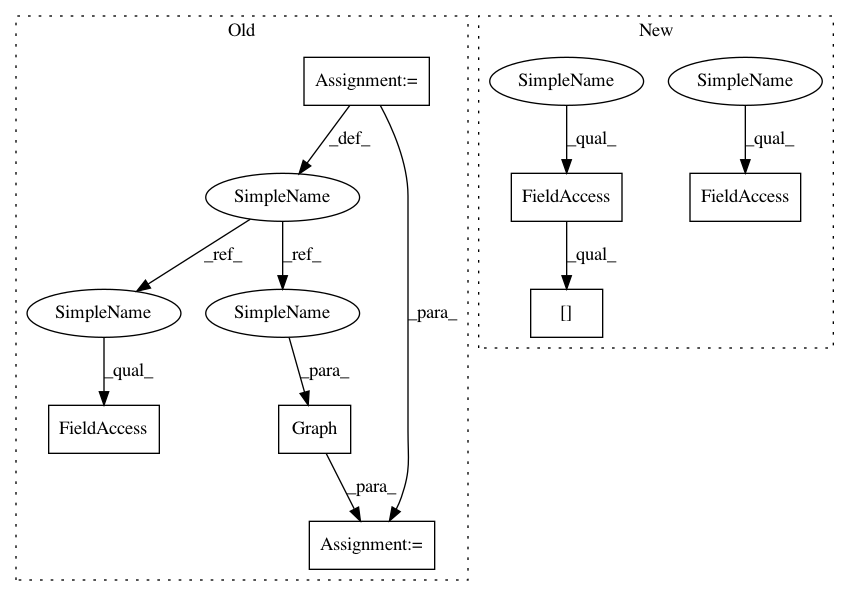

effd83fd33c6719d09634cb6a056e9c9054fc492,autokeras/net_transformer.py,,to_deeper_graph,#Any#,70
Before Change
Returns:
The deeper model
graph = Graph(model)
weighted_layers = list(filter(lambda x: isinstance(x, tuple(WEIGHTED_LAYER_FUNC_LIST)), model.layers))[:-1]
target = weighted_layers[randint(0, len(weighted_layers) - 1)]
if is_conv_layer(target):
graph.to_conv_deeper_model(target, randint(1, 2) * 2 + 1)
After Change
weighted_layers = list(filter(lambda x: isinstance(x, tuple(WEIGHTED_LAYER_FUNC_LIST)), graph.layer_list))[:-1]
target = weighted_layers[randint(0, len(weighted_layers) - 1)]
if is_conv_layer(target):
graph.to_conv_deeper_model(graph.layer_to_id[target], randint(1, 2) * 2 + 1)
else:
graph.to_dense_deeper_model(graph.layer_to_id[target])
return deepcopy(graph)
In pattern: SUPERPATTERN
Frequency: 3
Non-data size: 7
Instances
Project Name: keras-team/autokeras
Commit Name: effd83fd33c6719d09634cb6a056e9c9054fc492
Time: 2018-03-13
Author: jhfjhfj1@gmail.com
File Name: autokeras/net_transformer.py
Class Name:
Method Name: to_deeper_graph
Project Name: keras-team/autokeras
Commit Name: effd83fd33c6719d09634cb6a056e9c9054fc492
Time: 2018-03-13
Author: jhfjhfj1@gmail.com
File Name: autokeras/net_transformer.py
Class Name:
Method Name: to_deeper_graph
Project Name: keras-team/autokeras
Commit Name: effd83fd33c6719d09634cb6a056e9c9054fc492
Time: 2018-03-13
Author: jhfjhfj1@gmail.com
File Name: autokeras/net_transformer.py
Class Name:
Method Name: to_wider_graph
Project Name: keras-team/autokeras
Commit Name: effd83fd33c6719d09634cb6a056e9c9054fc492
Time: 2018-03-13
Author: jhfjhfj1@gmail.com
File Name: autokeras/net_transformer.py
Class Name:
Method Name: to_skip_connection_graph